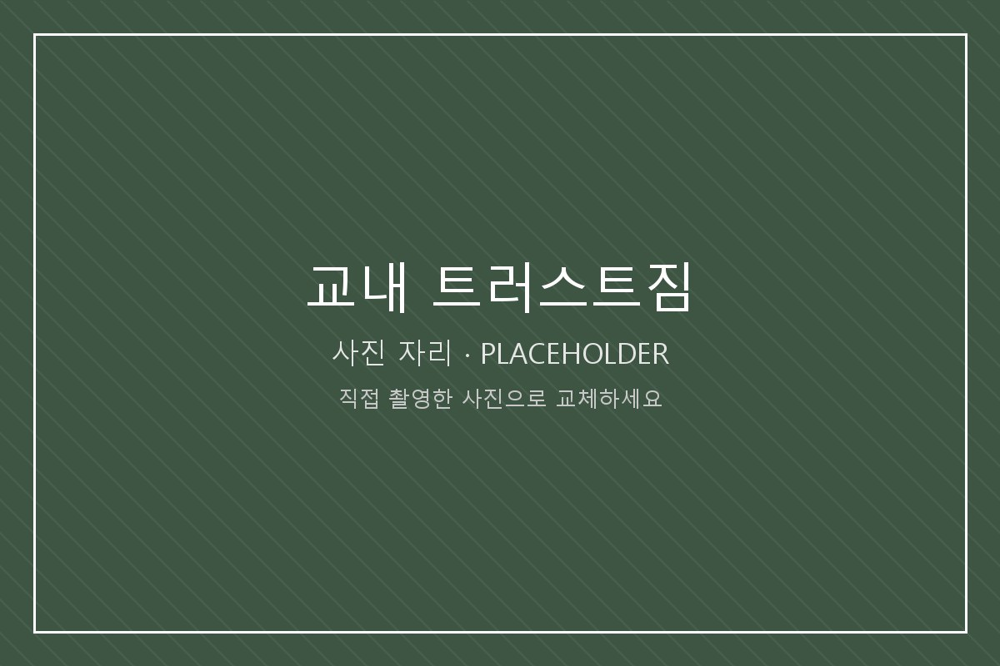

이 장소가 의미 있는 이유
운동을 원래 좋아했던 것은 아니다. 이 헬스장에 다니는 이유는 단순하다. 캠퍼스 안에 있기 때문이다.
집 근처 헬스장을 끊었다가 두 달을 못 채우고 그만둔 적이 있다. 수업이 끝나고 집에 갔다가 옷 갈아입고 다시 나오는 그 단계 하나가 매번 발목을 잡았다. 여기는 그 단계가 없다. 수업 끝나고 그냥 걸어가면 도착한다.
의지가 강해져서 운동을 계속하게 된 게 아니라, 안 갈 핑계가 사라져서 계속하게 됐다. 이 장소를 세 곳 중 하나로 고른 이유가 그거다. 거리가 습관을 만든다는 걸 여기서 처음 체감했다.
찾아가는 방법
성심교정 안에 있는 헬스장으로, 카카오맵에서도 학교와 같은 주소(지봉로 43)로 등록되어 있다. 수업 건물에서 걸어서 갈 수 있는 거리이며, 이용 방법과 등록 절차는 이용 전에 안내를 확인하는 것이 좋다.
여기에서 해볼 것
- 수업 끝나고 집에 들르지 않고 바로 오는 날이 며칠인지 세어 보기
- 기구별로 대기가 가장 긴 시간대 찾아 두기
- 가장 가벼운 무게로 한 달만 같은 루틴 반복해 보기
- 운동 전후로 학관 편의점에서 뭘 사게 되는지 기록해 보기
가기 좋은 시간
저녁 수업이 끝나는 시간대에는 사람이 몰린다. 공강이 긴 날 오후에 오면 기구를 기다리지 않고 쓸 수 있다.